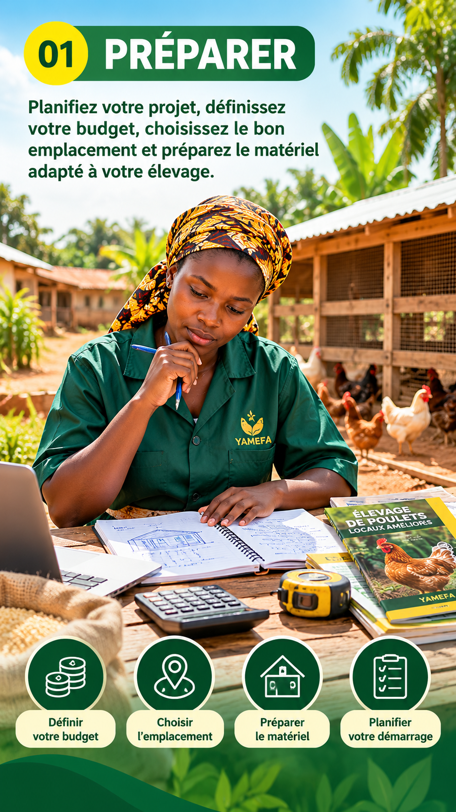
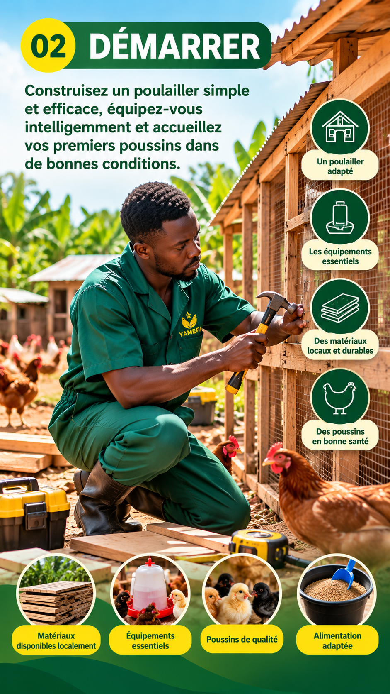
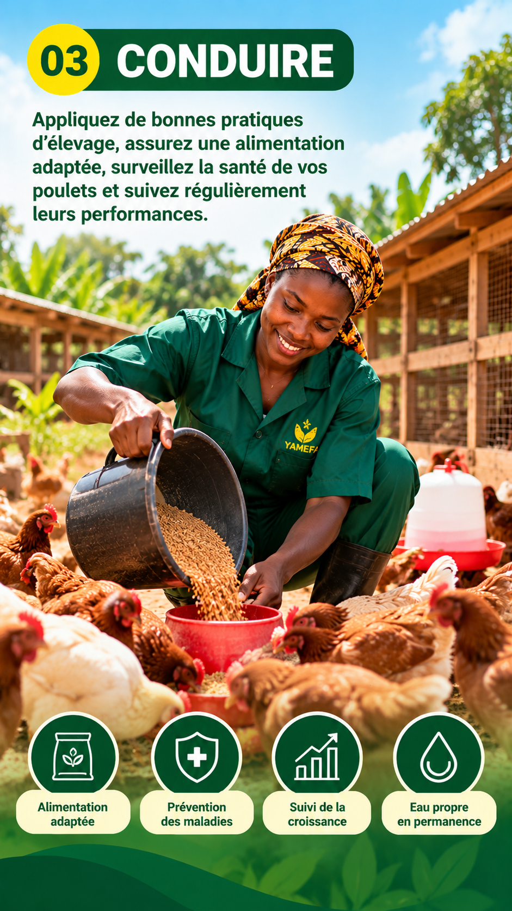
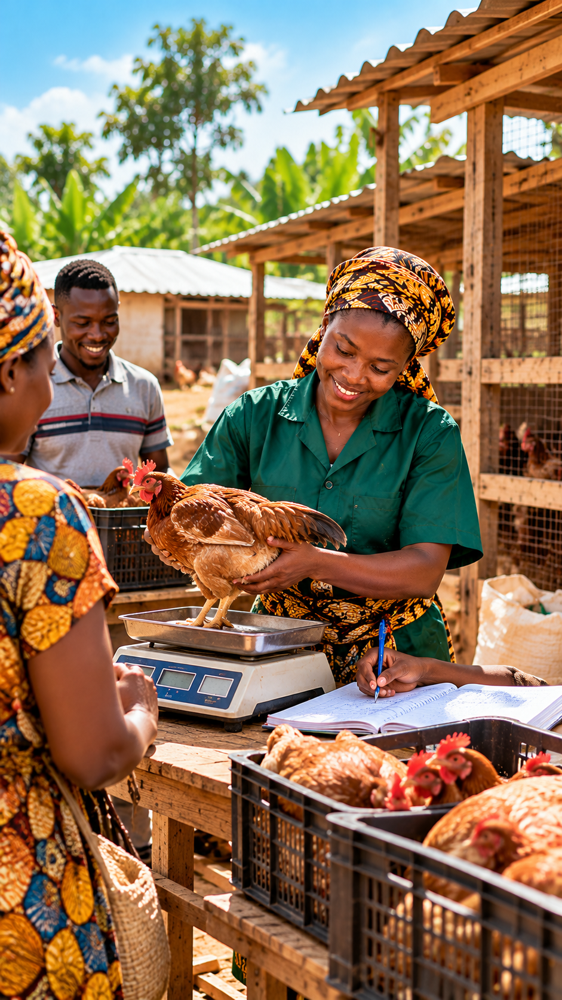

01 · PRÉPARER
Préparer
Budget, emplacement, matériel et organisation du démarrage.
Élevage de poulets locaux améliorés — un parcours pratique pour préparer, démarrer, conduire et analyser votre premier cycle, avec un petit capital.
Les chapitres et étapes suivent une progression du démarrage à la vente.
Le guide propose un scénario indicatif de démarrage autour de 50 000 FCFA.
Logement, alimentation, suivi, prévention, reproduction et commercialisation sont abordés.
Le suivi des dépenses, des animaux, des ventes et du cycle fait partie de l'approche.
Les visuels se déplacent automatiquement. Sur mobile, faites glisser les cartes horizontalement.

Budget, emplacement, matériel et organisation du démarrage.

Installer les sujets et créer de bonnes conditions de départ.

Alimentation, prévention, observation, croissance et suivi.

Préparer la vente, suivre les coûts et analyser le cycle.
Réinvestir progressivement et structurer la suite de l'activité.
Le guide organise les repères nécessaires pour préparer, démarrer, conduire et analyser un cycle. Il ne remplace pas le terrain ni l'avis d'un professionnel lorsque la situation l'exige.
Préparer avant d'acheter.
Éviter de démarrer sans espace, matériel et organisation.
Suivre les données.
Effectif, mortalité, alimentation, dépenses, poids et ventes.
Penser comme un entrepreneur.
Relier conduite de l'élevage et analyse économique.
Réinvestir progressivement.
Utiliser le bilan du cycle pour décider de la suite.
Dans les formules opérationnelles, les outils sont conçus pour aider l'éleveur à suivre ses données et à raisonner sur son économie réelle.
Exemple d'interface — les chiffres réels doivent être saisis selon votre cycle.
5 000 F = savoir · 10 000 F = savoir + outils · 50 000 F = savoir + outils + accompagnement
YAMEFA garantit les contenus, outils et éléments d'accompagnement effectivement annoncés dans la formule achetée, selon les modalités et la période prévues. La rentabilité finale n'est pas garantie : elle dépend aussi des conditions réelles d'élevage, des coûts, des performances et du marché.
DÉMARRAGE 50K™ correspond à l'accès au guide numérique et à son contenu pédagogique. C'est la seule offre actuellement ouverte dans ce prototype.
Le guide présente un budget indicatif de démarrage autour de 50 000 FCFA, notamment pour environ 25 sujets dans son scénario. Les montants doivent être adaptés aux prix et conditions locales.
Non. Le résultat économique dépend des coûts, performances, mortalité, alimentation, prix de vente, transport et autres charges. Le guide propose une logique de suivi et de calcul, mais ne garantit pas un bénéfice.
Non, pas encore dans cette version. Elles sont affichées comme « bientôt disponibles » et pourront être activées lorsque leurs modalités seront finalisées.
Le guide YAMEFA est disponible maintenant à 5 000 FCFA. Les niveaux opérationnel et premium seront activés prochainement.